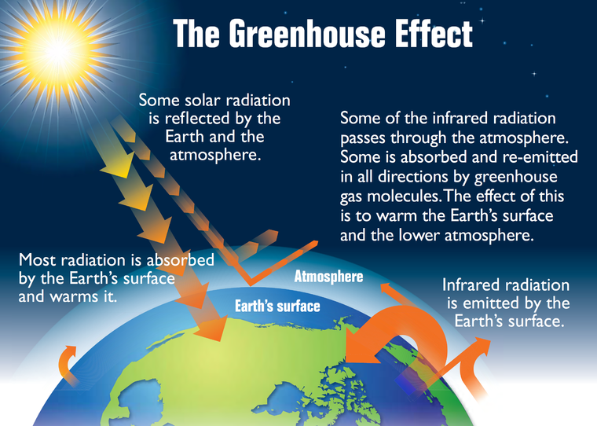
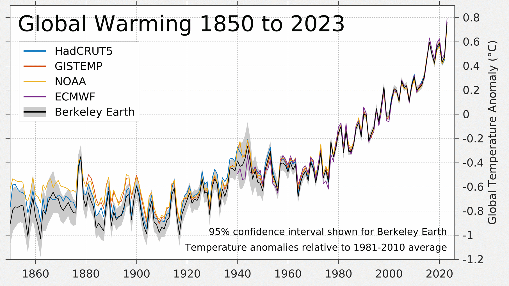
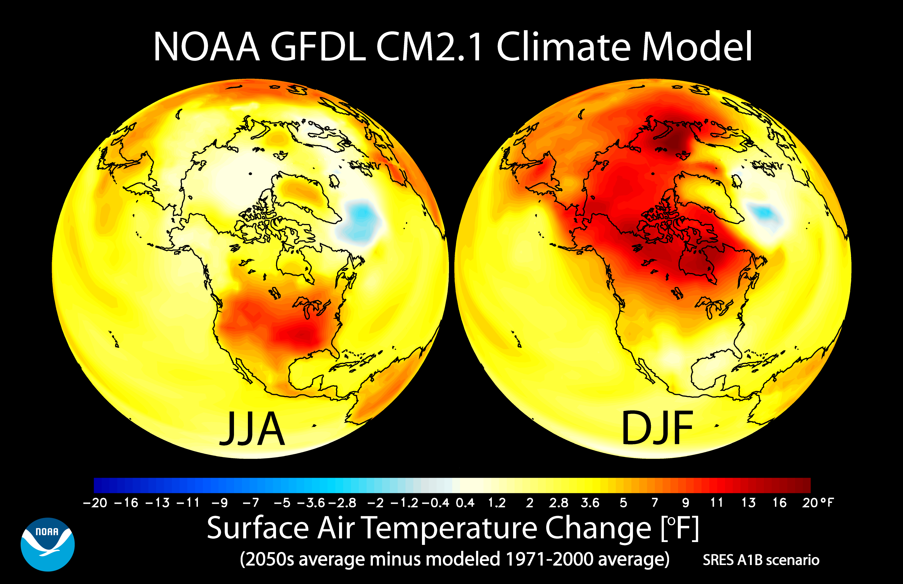

Climate Science
Understanding the science behind climate change
Introduction to Climate Science
Climate science is the study of the Earth's climate system and how it changes over time. It encompasses a wide range of disciplines, including atmospheric physics, oceanography, geology, and ecology. Climate scientists collect and analyze data from various sources to understand past climate patterns, current climate conditions, and to predict future climate scenarios.

The Earth's climate has naturally fluctuated throughout its history due to factors such as changes in the Earth's orbit, volcanic activity, and variations in solar output. However, the current rate of climate change is unprecedented in recent geological history and is primarily driven by human activities, particularly the emission of greenhouse gases from burning fossil fuels.
Key Fact
The Intergovernmental Panel on Climate Change (IPCC), established in 1988, is the United Nations body responsible for assessing the science related to climate change. It provides policymakers with regular scientific assessments on climate change, its implications, and potential future risks.
The Greenhouse Effect
The greenhouse effect is a natural process that warms the Earth's surface. When the Sun's energy reaches the Earth's atmosphere, some of it is reflected back to space and the rest is absorbed and re-radiated by greenhouse gases. These gases include water vapor, carbon dioxide, methane, nitrous oxide, and ozone.
Greenhouse gases act like a blanket, trapping heat in the Earth's atmosphere and warming the planet. This natural greenhouse effect is essential for life on Earth, as without it, the planet would be too cold to support life as we know it. However, human activities have significantly increased the concentration of greenhouse gases in the atmosphere, enhancing the greenhouse effect and leading to global warming.
Key Fact
Carbon dioxide (CO₂) levels in the atmosphere have increased by more than 45% since the Industrial Revolution began in the late 18th century, primarily due to the burning of fossil fuels and deforestation.
Global Warming
Global warming refers to the long-term heating of Earth's climate system observed since the pre-industrial period (between 1850 and 1900) due to human activities, primarily fossil fuel burning, which increases heat-trapping greenhouse gas levels in Earth's atmosphere.
The term "global warming" is often used interchangeably with the term "climate change," though the latter refers to both human- and naturally-produced warming and the effects it has on our planet. Scientists have observed that the average global temperature has increased by about 1.1°C since the pre-industrial era.
This warming has led to a range of impacts, including more frequent and intense heat waves, changes in precipitation patterns, sea level rise, and more extreme weather events such as hurricanes, floods, and droughts.
Key Fact
The Paris Agreement, adopted in 2015, aims to limit global warming to well below 2°C, preferably to 1.5°C, compared to pre-industrial levels. To achieve this goal, global greenhouse gas emissions need to be reduced significantly in the coming decades.
Climate Models
Climate models are mathematical representations of the Earth's climate system. They are based on the physical, chemical, and biological properties of the Earth's components (atmosphere, hydrosphere, cryosphere, land surface, and biosphere) and their interactions.
Scientists use climate models to understand how the climate has changed in the past and to project how it might change in the future under different scenarios of greenhouse gas emissions. These models are continuously improved as our understanding of the climate system advances and as computing power increases.
Climate models have successfully reproduced observed features of current climate and past climate changes. They provide valuable insights into the potential impacts of climate change and help inform policy decisions aimed at mitigating these impacts.
Key Fact
The IPCC's Sixth Assessment Report, released in 2021, used the latest generation of climate models to project that global surface temperature will continue to increase until at least the mid-century under all emissions scenarios considered.
Climate Impacts
Climate change is already affecting every region on Earth, with impacts varying by location and intensity. Some of the most significant impacts include:
- Rising Sea Levels: Thermal expansion of seawater and melting ice from glaciers and ice sheets are causing sea levels to rise, threatening coastal communities and ecosystems.
- Extreme Weather Events: Climate change is increasing the frequency and intensity of extreme weather events such as heat waves, droughts, floods, and tropical cyclones.
- Biodiversity Loss: Many plant and animal species are struggling to adapt to rapid climate change, leading to shifts in their geographic ranges, changes in seasonal activities, and in some cases, extinction.
- Ocean Acidification: The ocean absorbs about 30% of the CO₂ released into the atmosphere, leading to increased acidity that threatens marine ecosystems, particularly coral reefs and shellfish.
These impacts have significant implications for human societies, affecting food security, water availability, public health, and economic development. The most vulnerable populations, often those with the least resources to adapt, are likely to be the most severely affected.
Key Fact
According to the World Health Organization, climate change is expected to cause approximately 250,000 additional deaths per year between 2030 and 2050, from malnutrition, malaria, diarrhea, and heat stress.
Scientific Solutions
Addressing climate change requires a combination of mitigation (reducing greenhouse gas emissions) and adaptation (adjusting to current or expected climate change impacts). Science plays a crucial role in developing and implementing effective solutions:
- Renewable Energy: Transitioning from fossil fuels to renewable energy sources such as solar, wind, and hydropower can significantly reduce greenhouse gas emissions.
- Energy Efficiency: Improving energy efficiency in buildings, transportation, and industry can reduce energy consumption and associated emissions.
- Carbon Capture and Storage: Technologies that capture CO₂ from point sources or directly from the atmosphere and store it underground can help reduce atmospheric CO₂ levels.
- Nature-Based Solutions: Protecting and restoring forests, wetlands, and other ecosystems can enhance carbon sequestration and provide additional benefits such as biodiversity conservation and flood protection.
Scientific research continues to advance our understanding of climate change and to develop innovative solutions. However, implementing these solutions requires political will, economic investment, and societal change. The transition to a low-carbon, climate-resilient future presents both challenges and opportunities for sustainable development.
Key Fact
The International Renewable Energy Agency (IRENA) reports that renewable energy could supply 86% of global power demand by 2050, significantly reducing energy-related CO₂ emissions and helping to limit global warming.